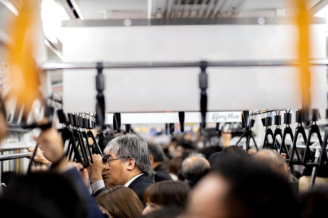

- Find a seat or standing spot, but be considerate of other passengers, particularly those who may need priority seating.
- Yield seats to seniors, disabled individuals, and pregnant passengers, as required by law.
- If you have mobility challenges, look for low-floor buses or light rail vehicles, which are equipped with ramps or lifts.
- Stay informed by using real-time arrival apps or monitoring digital signs at transit stations to track your ride's progress.
- Sit back and enjoy your journey. San Francisco's diverse neighborhoods and scenic views make for an interesting and picturesque commute.
warning While San Francisco is generally a safe city, be aware of your surroundings and keep an eye on your belongings. Report any suspicious activity to the operator or a station agent. Report any suspicious activity to the operator or a station agent.
